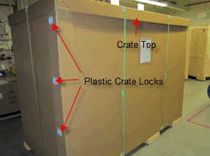
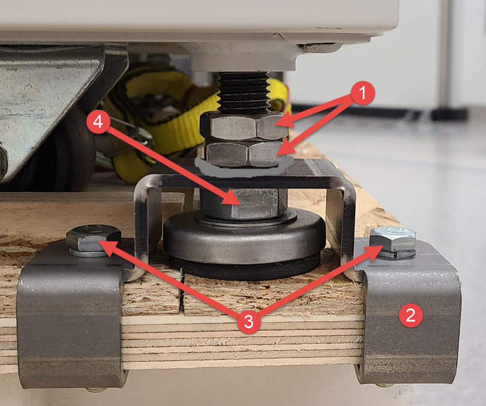
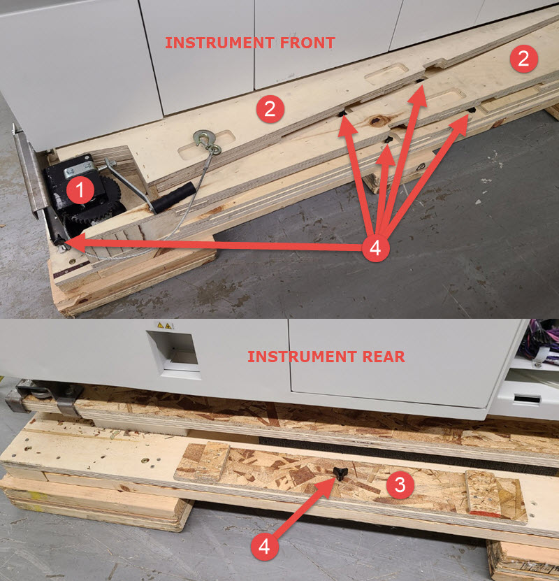
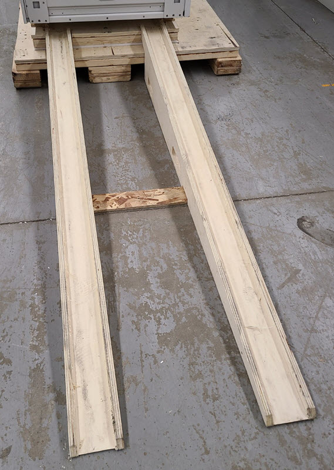
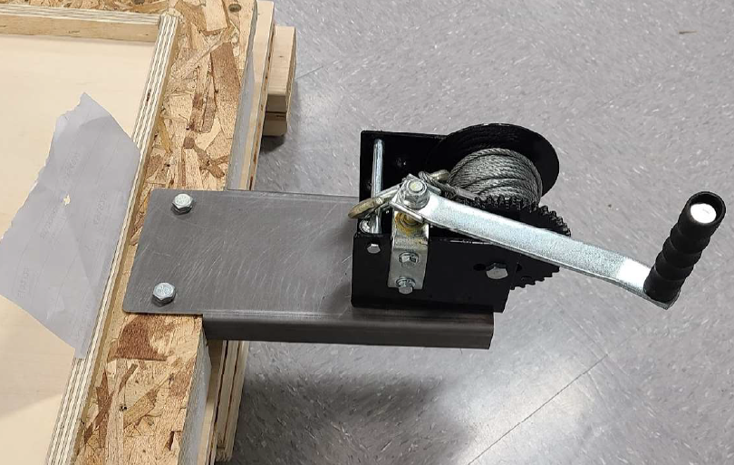
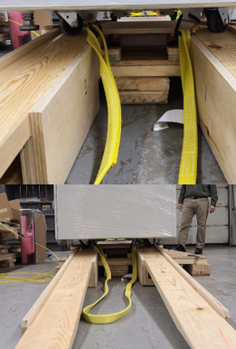
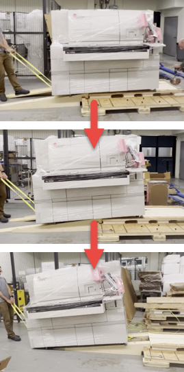
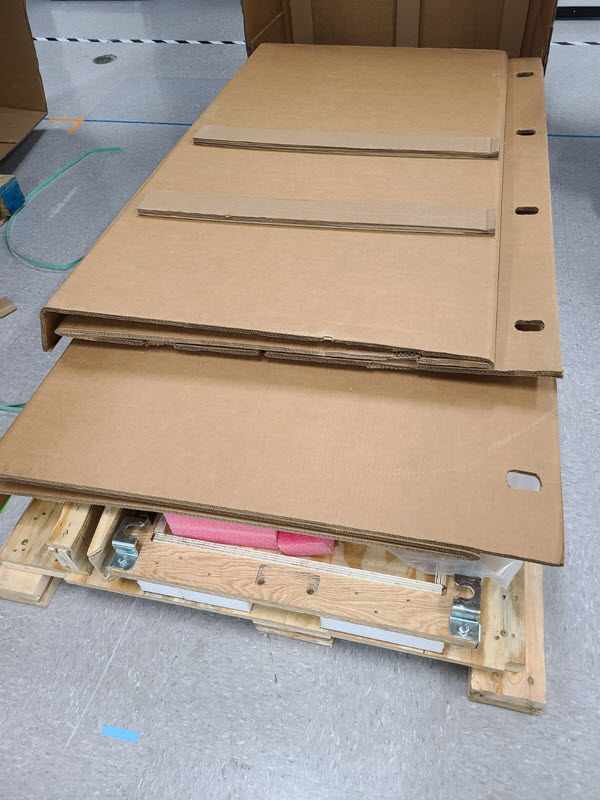
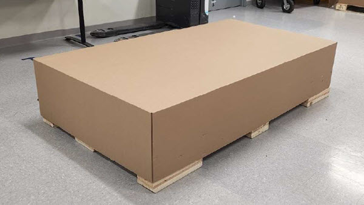
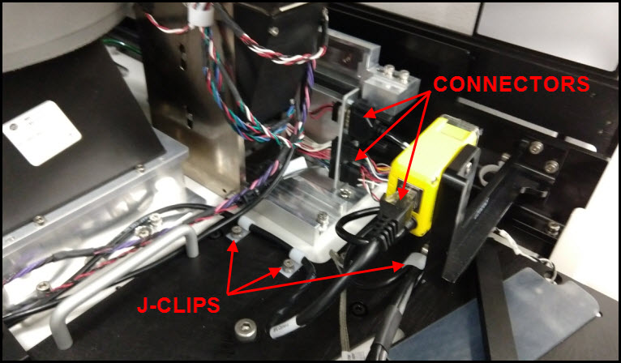

Move the crate to a location with enough space to uncrate the instrument.
Cut the band straps and/or shrink wrap and discard them.
Remove the cardboard top of the crate.
Squeeze and pull the center of each of eight plastic crate locks to unlock them.
Figure 2:

Remove the loose sidewalls of the crate to access the instrument.
Remove the front box.
Locate the four restraint brackets that secure the instrument to the crate. Using the wrench, remove the restraints and raise the leveling feet.
Figure 3:

1
Jam nuts
2
Restraint bracket
3
M10 cap screws
4
Leveling foot
Loosen the two jam nuts so they are clear of the restraint brackets.
Remove the M10 cap screws and remove the restraint brackets.
Raise the instrument leveling feet so that they are retracted as much as possible. The jam nuts may need to be adjusted for full retraction.
Remove the following items from the instrument crate storage positions.
Figure 4:

1
Winch assembly (1 thumb screw)
2
Loading and unloading ramps (2 thumb screws each)
3
Ramp spacing bracket (1 thumb screw)
4
Thumb screws
Secure the ramps to the crate with the spacing bracket beneath them to ensure proper width for the entire length of the ramps.
Figure 5:

Use the included hardware to secure the winch assembly to the crate base opposite the ramps.
Figure 6:

Attach the winch hook to the clip on the underside of the instrument chassis. The winch cable may need to be extended slightly to reach.
On the ramp side of the crate, free the strap from beneath the instrument. It should be attached to the chassis with two carabiner clips.
Figure 7:

While one person holds the longer strap on the ramp side, pulls the instrument, and keeps it centered, another person must use the winch to slowly release the cable. Slowly and carefully move the instrument down the ramps and off the crate.
Caution: To reduce risk of the instrument tipping or falling, be sure the instrument wheels and casters stay centered on the ramps.
Figure 8:

After the instrument is completely off the ramps and has been moved to a safe location, remove the straps and carabiner clips from the chassis.
Step 2: Pack Down the Crate for Storage or Transportation
If the you are not immediately disposing of the crate, you must pack it down for storage or transportation.
Return the restraint brackets to their original locations and secure them with two M10 cap screws apiece.
Return the ramps, the ramp spacing bracket, and the winch to their storage locations and secure them with the thumb screws.
Fold the straps and place them with the carabiner clips onto the center of the crate deck.
Place any additional packing materials (e.g. foam or plastic wrapping) that will be reused onto the crate deck.
Fold in the cardboard sides and place them on top of the deck.
Figure 9:

Place the cardboard top over the entire crate package.
Note: Up to four empty crates may be stacked together.
Figure 10:

Step 3: Prepare to Move the Instrument
Determine whether any components must be removed from the instrument before you move it.
Inspect the transportation path from the uncrating area to the final destination. Measure width of all doorways and restrictions along the way.
Compare the measurements with those in the table below. Remove components as needed.
Width of Transport Path
Components to Remove
Greater than 41 inches (1042 mm)
None
Between 41 inches (1042 mm) and 32 inches (813 mm)
Sample presentation unit (SPU)
Between 32 inches (813 mm) and 31 5/8 inches (804 mm)
Grasp the locking lever and pull the sample presentation unit (SPU) subsystem away from the instrument.
If the instrument has a swing-out table, lift the swing-out table a few inches to allow the SPU to swing out as illustrated below. The swing-out table is not available in newer models.
Figure 11:
1
Sampler handler pin
2
Swing out table
To remove the SPU assembly entirely, near the presentation tray, disconnect the following three cables for the SPU subsystem and remove them from their J-clips.
Network cable from the SPU camera.
Note: You must remove the cable from the J-clips on the SPU baseplate. You may not need to remove the connector at the camera.
Serial cable.
Main SPU cable connector.
Figure 12:

Swing the SPU back into place and latch it. See the illustration below for the most efficient hand placement.
Note: If the instrument has a swing-out table, raise it a few inches before you swing the SPU back into place.
Figure 13:
Open the main instrument cover.
Use a 4mm driver to remove the nine screws that secure the SPU baseplate to the instrument chassis.
Note: All screws can be accessed while the SPU is closed.
Figure 14: Sample Presentation Unit (SPU) Baseplate and Screws
Hold the SPU. Pull the latch release to release the presentation unit, but don't pull it out.
Lift the SPU subsystem up and out of the instrument. Notice the locating pins and metal lip that hold the baseplate onto the instrument chassis when the screws have been removed.
Caution: The SPU is heavy. Be careful when lifting it.
Important: After you remove the subsystem, when you rest it somewhere, be sure nothing is binding or pinched that may cause damage.
Step 5: Move, Reassemble, and Station the Instrument
Caution: A minimum of two people must help to move the instrument. Use the yellow shipping straps to pull and move the instrument. Do not use the covers as a hand location to push the instrument.
Move the instrument to its final destination.
Install the instrument covers, if they were removed.